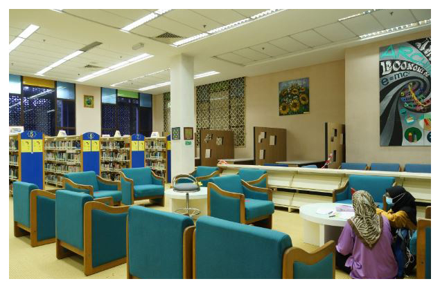
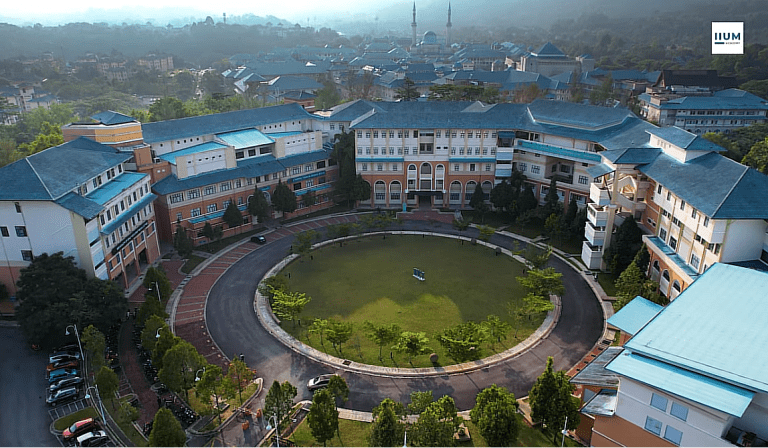
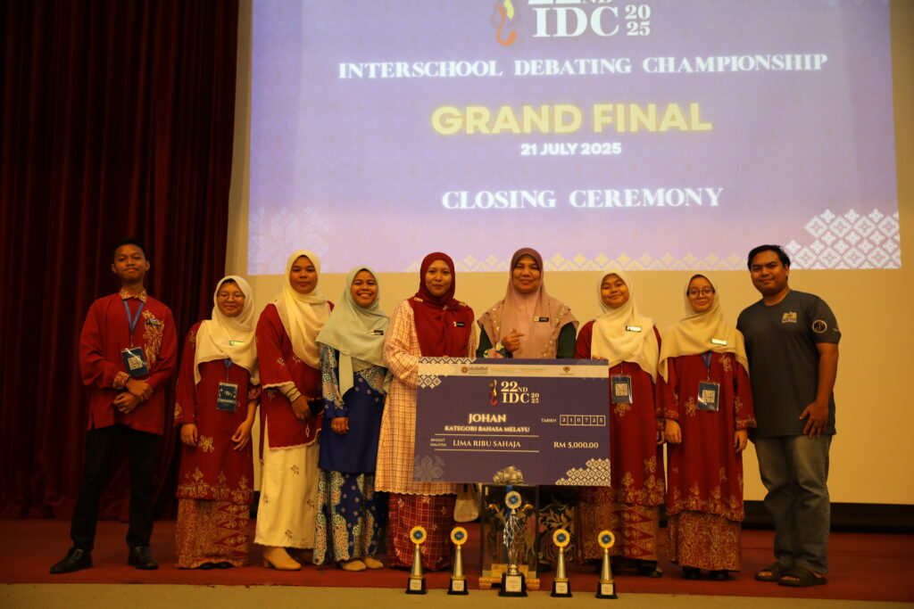
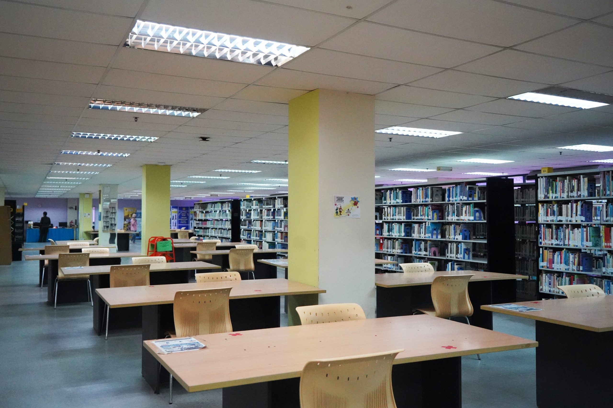

About International Islamic University Malaysia (IIUM)
Established in 2004, International Islamic University Malaysia (IIUM) has grown into a dynamic private university focused on delivering career-oriented education. Originally founded as the Masterskill School of Nursing and Healthcare, IIUM achieved full university status in 2012 and expanded its academic portfolio into Business Management, Information Technology, Computer Science, and Allied Health Sciences.
Fully accredited by the Malaysian Qualifications Agency (MQA) and recognized internationally by the Accreditation Service for International Schools, Colleges & Universities (ASIC), IIUM provides industry-focused diplomas, bachelor's degrees, and postgraduate qualifications designed to equip graduates with practical skills for the modern workforce.
Campus Life

Iium-Lib-Leisure-Area

Iium Campus 3

Iium Debate Champ Team

Iium Excellent Student Won Several Competition

Iium Library
Campus & Facilities
International Islamic University Malaysia operates vibrant campuses designed to foster academic growth and personal development. With state-of-the-art learning hubs across Selangor, Kuala Lumpur, and Johor Bahru, IIUM provides specialized laboratories and collaborative study zones for students.
- Modern Computer Labs: Equipped with high-speed internet, development software, and tech tools for IT and business data analysis.
- Clinical & Healthcare Simulation Labs: Practical training suites simulating clinical settings for nursing and health science studies.
- Resource Library: Access to physical textbooks, digital e-journals, research databases, and quiet study rooms.
- Student Lounge & Recreation: Dedicated communal spaces for social activities, collaborative projects, and peer networking.
- Interactive Classrooms: Smart seminar rooms fitted with modern multi-media presentation technologies.